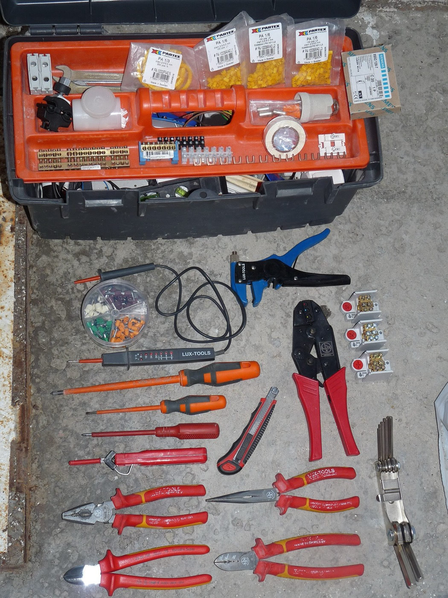

📄 PDF 내보내기: Chrome에서 열기 → Ctrl+P → 대상 "PDF로 저장" → 여백 "없음" → "배경 그래픽" 체크 → 저장. (인터넷 연결 시 폰트 정상 적용)
| 하이라이트는 배포 후 채울 부분입니다.
창업팀 대상 바이브 코딩 강의 — 2026.09.11
바이브 코딩과 함께
살아남기
코딩 없이 서비스를 만드는
(주)인바이즈 박철현
Contents
목 차
02
컴퓨터와 코딩
컴퓨터의 탄생 이유 · 코딩의 가치 · 컴퓨터는 무얼 할 수 있는가 · 연습문제
03
바이브 코딩
LLM · AI Agent · Vibe coding · 개발 프로세스 · 필수 사항
04
어떤 문제를 해결해야 할까
일을 '시키는' 사람이란 · 문제를 정의하자 · 항상 잘게 쪼개기 · 만들지 않고 맡기기
01 — 강사 소개
강사 소개
18.06삼성 / 카카오 코딩테스트 본선 진출
19.02동아대학교 컴퓨터공학과 졸업
19.07(주)인바이즈 창업
21.09법인 전환 및 CTO
22.01동아대학교 실증 React 아카데미 수업
24.024개 R&D 연구개발 총괄
24.08LG전자 On-Device 챌린지
25.06특허 5개 등록
02 — 컴퓨터와 코딩
컴퓨터의 탄생 이유
인간이 하기 번거롭고, 실수의 위험이 있는
계산을 대신 해줄 수 있는 기계
컴퓨터의 등장으로 사람들은
복잡한 수학 계산에서 비로소 자유로워졌습니다
이 컴퓨터를 잘 쓰기 위해 GUI, 운영체제, 웹 브라우저가 —
그걸 또 잘 쓰기 위해 더 많은 프로그램이 지금도 태어나는 중

ENIAC (1945) — U.S. Army · Public Domain
02 — 컴퓨터와 코딩
코딩의 가치
성능이 좋아진 컴퓨터에게 이제는
인간이 하지 않아도 되는 일을 맡기기 시작했습니다
프로그램도, 그걸 쓰는 환경도 폭발적으로 늘었습니다
휴대폰, IoT, 태블릿, 자동차 …
수요가 커진 만큼 언어, 프레임워크, 라이브러리 생태계도
계속 진화했습니다
프로그램을 만드는 일 자체가 계속 쉬워져 온 역사
프로그래밍 추상화의 계단 — 도구는 계속 쉬워져 왔다
02 — 코딩의 가치
코딩하는 사람은 계속 넓어져 왔습니다
진입장벽은 AI 전에도 60년 넘게 낮아지고 있었습니다.
코딩할 수 있는 사람의 폭무엇이 문턱을 낮췄나
1957전공자만
FORTRAN — 수식을 적는 언어, 쓰는 사람은 과학자뿐
1964학생도
BASIC — 전공이 아닌 대학생도 배우도록 만든 언어
1977집에서 혼자서도
Apple II — BASIC이 들어 있는 컴퓨터가 집으로
2008물어보면 누구나
Stack Overflow — 막히면 검색해서 푸는 시대
2021AI가 옆에서
GitHub Copilot — 다음 줄을 AI가 먼저 적어준다
그 사이 컴퓨터공학은 코드를 넘어섰습니다 — 남은 전공자의 가치는 더 깊은 문제를 정의하고 푸는 일입니다
02 — 코딩의 가치
생성형 AI와 AI Agent — 5년의 변화
사람이 하는 일이 '적기'에서 '시키기'로 옮겨왔습니다.
AI가 하는 몫사람이 하는 몫
다음 줄직접 적는다
2021.6한 줄씩
Copilot — 쓰던 코드의 다음 줄을 제안한다
코드 조각복사해 붙인다
2022.11대화로
ChatGPT — 물어보면 코드를 짜 준다
화면 전체말로 설명
2025.2말로
'바이브 코딩' — 말로 만든다는 이름이 붙다
읽고 고치고 실행맡기고 확인
2025.5맡긴다
Claude Code — 읽고 고치고 실행까지 한다
→
오늘
그래도 사람에게 남은 일
- ① 무엇을 만들지 고른다
- ② 잘 됐는지 확인한다
AI가 가져간 것은 적는 일입니다. 고르는 일은 그대로 남았습니다
전선을 잇던 기술자가 사라진 것처럼 — 숙련자의 영역에 초심자가 바로 들어갈 수 있게 됐습니다
02 — 컴퓨터와 코딩
컴퓨터는 무얼 할 수 있는가
?
02 — 도구를 보는 안목
컴퓨터는 무얼 할 수 있는가
전기 배선을 할 줄 안다고, 수도꼭지 설치를 반드시 할 수 있는 것은 아닙니다.

가진 도구Dmitry G · CC BY-SA 3.0전기 배선 공구
피복 벗기기 · 압착 · 전압 확인
→이 공구로?
하려는 일ocean yamaha · CC BY 2.0
수도꼭지 설치
배관 조이기 · 새는 물 막기
한계
공구가 맞지 않습니다
전선을 벗기고 누르는 공구로는
배관을 조이고 새는 물을 막기 어렵습니다
수지타산
억지로 하면 손해입니다
맞는 공구를 사고 요령을 익히는 비용이
배관공을 한 번 부르는 비용보다 큽니다
코딩도 도구입니다 — 할 수 있느냐보다 이 도구로 푸는 게 맞느냐를 먼저 가려내는 안목이 필요합니다
02 — 도구를 보는 안목
컴퓨터는 무얼 할 수 있는가
Unsplash · CC0
컴퓨터의 몫
반복과 기억
- 버스 도착 데이터를 매일 같은 규칙으로 수집·정리
- 축제 후기 수천 건에서 특정 단어를 즉시 검색
- 조건이 맞는 순간, 24시간 언제든 알림
Unsplash · CC0
사람의 몫
발견과 판단
- 현장에서 사람들이 겪는 불편을 발견한다
- 두 기능 중 무엇이 더 가치 있는지 결정한다
- 아직 어디에도 기록되지 않은 사실을 알아챈다
왼쪽은 AI에게, 오른쪽은 여러분에게 — 오늘 실습의 역할 분담이기도 합니다
02 — 도구를 보는 안목
만들 수 있는게 뭔지 판단하는 기준
기준 1 — 획득컴퓨터가 획득할 수 있는 데이터인가?
O — 획득할 수 있는 데이터
- 사진 · 영상 · 위치(GPS) · 센서 값
- 사용자가 직접 입력한 글과 신고
- 공개된 웹페이지의 일정 · 공고 · 통계
X — 획득할 수 없는 데이터
- 냄새 · 촉감 같은 감각 정보
- 사람의 속마음, 기록되지 않은 현장 상황
기준 2 — 가공컴퓨터로 가공할 수 있는 데이터인가?
O — 가공할 수 있는 일
- 계산 · 통계 · 조건 비교 · 분류
- 검색 · 요약 · 지도 표시 · 알림
X — 가공으로 해결되지 않는 일
- 무엇이 더 중요한지에 대한 가치 판단
- 미래를 확정하는 일 (예측은 오차가 있는 추정)
- 쓰레기 치우기 같은 물리적 행동
두 질문에 모두 '예'라면 — 만들 수 있습니다. 이제 직접 판단해봅시다
02 — 연습 ① · 함께 생각해봅시다
우리 가게 앞을 하루에 몇 명이
지나가는지 보여주는 대시보드
유동인구 데이터는 공개돼 있으니 금방 되겠죠 — 만들 수 있을까요?
Q1
02 — 연습 ①
가게 앞 유동인구 대시보드
판단 — 데이터는 있습니다. 그런데 우리 가게 앞은 없습니다.
CUT오늘 되게 자르면
- 목표 해상도를 낮춘다 — 행정동 단위 비교면 오늘 된다
- 직접 만든다 — 3일간 시간대별로 센 숫자를 입력받는 화면
- 대신 답할 질문을 바꾼다 — "몇 명"이 아니라 "언제 몰리나"
"데이터가 있다"와 "내 문제를 풀 만큼 있다"는 다릅니다 — 알고 싶던 것은 다른 방법으로도 알 수 있습니다
02 — 연습 ② · 함께 생각해봅시다
경쟁사 사이트를 자동으로 훑어
가격과 신제품을 추적하는 도구
누구나 볼 수 있게 공개된 정보입니다 — 만들 수 있을까요?
Q2
02 — 연습 ②
경쟁사 가격 자동 추적 도구
판단 — 만들 수는 있습니다. 써도 되는지는 별개의 문제입니다.
TECH기술적으로는 쉽다
- 페이지를 주기적으로 받아 와 어제와 비교하면 끝
- 주말 하나면 동작하는 것을 만들 수 있다
LAW공개 ≠ 자유 이용
- 저작권법 제93조 — 데이터베이스 제작자의 권리
- 대법원은 양·질 양쪽으로 "상당한 부분"인지를 본다
- 개인정보가 섞이면 개인정보보호법이 따로 걸린다
- 이용약관·robots.txt 위반은 별도로 남는다
접근할 수 있다와 써도 된다는 다릅니다 — 길이 막히면 길을 바꾸면 됩니다. 공식 API, 또는 우리 채널 데이터부터
02 — 연습 ③ · 함께 생각해봅시다
예약 부도(노쇼)를 줄이는
알림 보내주는 예약 앱
전날 문자로 한 번 더 알려주면 됩니다 — 만들 수 있을까요?
Q3
02 — 연습 ③
노쇼를 줄이는 예약 앱
판단 — 만들 수는 있습니다. 그런데 알림만으로는 안 줄어듭니다.
WHY NOT알림이 못 푸는 것
- 리마인더는 이미 대부분의 가게가 보내고 있다
- 안 오는 이유는 몰라서가 아니라 안 와도 손해가 없어서
- 외식업체 65%가 노쇼 경험 · 1회 평균 손실 44만 원
LEVER실제로 움직인 것
- 2025.12 공정위 기준 개정 — 위약금 상한 20%, 예약형은 40%
- 단, 위약금을 받으려면 사전 고지가 있어야 한다
- 여기서 코드가 할 일이 생긴다 — 고지·동의·예약금 링크
화면 뒤에서 현실의 규칙이 바뀌어야 문제가 풀립니다 — 코드가 주인공이 아닌 해법도 있습니다
02 — 연습문제 정리
세 번 다 다른 곳에서 막혔습니다
연습 ① — 기술과 데이터
만들 수 있는가?
컴퓨터가 알 수 있는 데이터가 내 문제를 풀 만큼 있는가 — 해상도·범위·가격까지 확인해야 합니다
연습 ② — 정책과 권한
만들어도 되는가?
법 · 약관 · 개인정보 — 코드를 짤 수 있다는 것과 써도 된다는 것은 다른 문제입니다
연습 ③ — 현실의 변화
만들면 해결되는가?
화면 뒤에서 현실의 규칙이 바뀌어야 합니다 — 코드는 그 규칙을 집행 가능하게 만듭니다
같은 질문에 세 번 다 처음 떠올린 방법이 막혔습니다 — 그래도 풀려던 문제는 저마다 다른 길로 풀렸습니다
02 — 시작하기 전에
잘못되는 방식은 네 가지입니다
기술이 모자라서가 아니라, 확인하지 않아서 생깁니다.
BEFORE만들기 전에 이미 걸리는 것
- ① 하려는 일 자체가 금지된 경우
표를 자동으로 잡아주는 프로그램은 매크로를 안 써도 금지입니다. 판 금액의 최대 50배를 물 수 있습니다
- ② 남이 모아둔 자료를 통째로 가져오는 경우
공개돼 있다고 마음대로 써도 되는 건 아닙니다. 품을 들여 모은 사람에게 따로 권리가 있습니다
AFTER내놓은 뒤에 터지는 것
- ③ 받아둔 정보가 새어나가는 경우
회원가입에서 필요 없는 것까지 받아두면, 새는 날 전부 내 책임이 됩니다. 오늘부터 법이 더 세집니다
- ④ 없는 기능을 있다고 적는 경우
"AI 기반"이라고 썼으면 증명할 자료가 있어야 합니다. 없으면 광고를 내려야 합니다
①②는 무엇을 만들지 고를 때, ③④는 내놓기 직전에 한 번씩 되물으면 대부분 걸러집니다
02 — 시작하기 전에
말로만 하는 이야기가 아닙니다
③ 정보가 샌 경우
AI로 만든 SNS 몰트북, 2026년 1월
창업자가 "코드는 한 줄도 안 썼다"고 밝힌 서비스. 보안 연구자가 몇 분 만에 데이터베이스 전체에 들어갔습니다
이메일 3.5만 건과 이용자 열쇠 150만 개가 누구나 볼 수 있는 상태였습니다
moltbook.com ↗
④ 광고를 부풀린 경우
미국 금융당국, 2024년
AI로 투자 분석을 한다고 광고했지만 그런 기능이 없던 회사 두 곳에 제재가 내려졌습니다
각각 22.5만·17.5만 달러. 한국도 2025년 11월부터 같은 조사를 시작했습니다
① 방법이 금지된 경우
공연 입장권, 2026년 8월
예전에는 매크로를 쓸 때만 문제였지만, 이제는 어떻게 잡았든 공정한 절차를 건너뛰면 금지입니다
신고포상금 최대 5,000만 원. "기술로 되니까 해도 된다"가 통하지 않습니다
셋 다 만드는 능력의 문제가 아니었습니다 — 무엇을 만들지, 무엇을 받을지, 무엇을 적을지 고르는 순간의 문제였습니다
Chapter 03
AI Agent? Vibe coding?
한 번 알기만 하면 누구나 할 수 있습니다
03
03 — 바이브 코딩
LLM (Large Language Model)
언어를 입력받으면 통계학적으로 가장 적절한 출력을 내도록 학습된 AI 모델
GPT-5, Gemini 3.0, Claude Fable / Mythos —
"AI 성능이 좋다"는 말은 보통 모델의 성능을 가리킵니다
생성형 AI가 더 큰 범위 — 이미지·영상·음성 생성 모델을 포괄하고,
LLM은 그중 언어에 특화된 분류
03 — 바이브 코딩
AI Agent
사람이 설정한 목표를 달성하기 위해 스스로 전략을 짜고 행동하는 시스템
컴퓨터 자동화, 업무, 코딩, 자율주행 — 목적에 따라 구분됩니다
Cursor, Claude Code, Codex — 모두 코딩 에이전트입니다
Computer Use — 사용자 컴퓨터를 실제로 조작하는 에이전트.
귀찮은 테스트도 자동으로 수행합니다
03 — 바이브 코딩
Vibe coding
코드 작성을 AI에 위탁하고, 사람은 자연어로 프로그램을 개발하는 방법론
숙련자에게는 시간 절약,
초보자에게는 진입장벽의 소멸
GitHub Copilot · Cursor · Codex · Claude Code · Gemini CLI
Antigravity · Opencode · Windsurf · v0 · Lovable
03 — 바이브 코딩
개발 프로세스
소프트웨어는 어떤 순서로 만들어지는가
->
03 — 개발 프로세스
Waterfall / Agile
WATERFALL — 한 번에, 완벽하게요구 분석 → 설계 → 개발 → 테스트 → 배포
- 소프트웨어를 패키지로 개발하던 시대의 방식
- 다섯 단계를 한 호흡에, 최초 기획을 거의 완벽하게 구현하는 것이 목표

Waterfall model — Wikimedia Commons · CC BY 3.0
AGILE — 잘게, 자주고객 피드백 중심의 짧은 반복
- 배포와 업데이트가 간단해지며 도입, 작동 가능한 앱을 빠르게 배포
- 앱스토어의 앱이 수시로 업데이트되는 이유
Agile 반복 주기 (도식) — cf. Manifesto for Agile Software Development, 2001
AI 등장 전까지는 프로그램의 속성에 따라 두 방법론 중 적절한 것을 택하는 것이 트렌드
03 — 개발 프로세스
바이브 코딩에 어울리는 프로세스는?
문제 정의->
AI와 검토·기획->
수정 명령->
테스트->
배포 가능 버전
↻ 반복
기본적으로는 Agile에 가깝다
Waterfall보다 Agile의 주기가 짧아졌던 것처럼, 바이브 코딩의 주기는 Agile보다 더 짧아졌습니다.
AI는 거대한 작업을 한 번에 수행하는 것에 취약하다
작은 기능을 하나하나 점진적으로 실행시키고, 테스트해야 합니다.
하루에도 몇 번씩 업데이트 가능한 상태 유지
이 상태를 유지하며 만드는 것이 바이브 코딩의 리듬입니다.
03 — 바이브 코딩 필수 사항
고민되는 점
어떤 모델? Cursor? Codex?
하네스 프로그래밍? 프롬프트 엔지니어링?
잘못 고르면 뒤처질 것 같지만 —
그렇게 깊게 고민할 문제가 없습니다
AI 시대에서는 행동하지 않는 게
가장 치명적인 손해
하나 골라 써보고 마음에 안 들면 그때 바꾸면 됩니다.
이제 그 '아무거나'를 함께 골라봅시다
03 — 바이브 코딩 필수 사항
바이브 코딩 필수 사항
01

AI Agent
Claude Code
개발자 평가 1위, 가장 큰 생태계
02

버전 관리
Git
버전 관리의 압도적 표준
03

데이터베이스
Supabase
초보자에게 '그나마' 쉬운 선택 (필수 아님)
04

호스팅 / 배포
Vercel
웹 배포 생태계 1위
03 — 바이브 코딩 필수 사항 ①
AI Agent 선정
추천 기준은 생태계의 크기
Claude Code
State of AI 2026 설문 기준, 개발자 평가 랭킹 1위 —
사용자 수도 GitHub Copilot과 1·2위를 다툽니다
강사의 경험 — Cursor로 시작했다가
무거운 설치가 싫어 가벼운 Claude Code로

출처 — State of AI 2026 · 2026.stateofai.dev
03 — 바이브 코딩 필수 사항 ②
버전 관리 — Git
짧아진 프로세스 주기를 관리하기 위한 필수 도구
버전 관리 프로그램의 압도적 1등 —
이 생태계를 이길 도구는 당분간 없습니다
"어제 버전으로 되돌리기", "팀원 작업과 합치기"가 가능해지는 안전장치
commit — branch — merge : 언제든 되돌릴 수 있는 기록
03 — 바이브 코딩 필수 사항 ③
데이터베이스 — Supabase
필수는 아닙니다 — 성격에 따라 필요할 수도, 아닐 수도
쉽게 말해 서비스를 위한 외장하드를 하나 사는 것
킬러 기능은 로그인 및 인증 —
잘못 만들면 위험한 부분을 대신 관리해줍니다
Google 로그인 같은 소셜 로그인도 지원

Supabase 테이블 에디터 — 출처: supabase.com/database
03 — 바이브 코딩 필수 사항 ④
호스팅 / 배포 — Vercel
모든 프로그램은 그것이 실행되는 컴퓨터가 필요합니다
그 컴퓨터를 켜두는 게 호스팅,
그 컴퓨터에 프로그램을 설치하는 게 배포
오늘은 웹 애플리케이션 —
웹 배포 생태계 1위 Vercel
AWS · GCP · Azure도 있지만 초보자에게는 아직 너무 어렵습니다

Vercel 배포 화면 — 출처: vercel.com/new
Chapter 04
어떤 문제를 해결해야 할까
반복되는 손작업 · 고객이 떠나는 지점 · 답이 늦는 문의
04
04 — 문제 정의
일을 '시키는' 사람이란
여러분은 AI Agent라는 부하 직원을 둔 사람
일을 할당해야 부하 직원이 움직입니다. "내가 A를 원하니까 그거 만들어와"라는 지시로는 원하는 결과를 얻을 수 없습니다.
일을 '잘' 시키는 방법
올바르고 적절한 문제를 정의해서 제시하는 것. 그것이 전부입니다.
여러분은 출제자가 되어야 합니다
아무리 읽어도 이해되지 않는 문제가 있고, 한 번만 읽어도 바로 이해되는 문제가 있습니다. 여러분이 내야 할 문제는 후자입니다.
04 — 문제 정의
문제를 정의하자
01 — 반복되는 손작업
매주 되풀이되는 정산
"3인 팀의 운영 담당자는 매주 월요일 오전을 통째로 써서, 채널 네 곳의 주문 내역을 손으로 옮겨 붙인다"
02 — 고객이 떠나는 지점
결제 직전에 사라지는 사람들
"장바구니까지 온 고객의 절반이 배송비를 확인하는 순간 창을 닫는데, 어느 화면에서 떠났는지 알 수 없다"
03 — 답이 늦는 문의
같은 질문을 매일 다시 받는다
"문의의 다수가 이미 공지에 있는 내용인데, 담당자가 하루에 수십 번 같은 답을 다시 쓴다"
세 문장의 공통점 — 누가 · 언제 · 무엇 때문에 불편한지가 한 문장에 담겨 있다
04 — 문제 정의
항상 잘게 쪼개기
모든 문제는 가능한 가장 작은 단위로 — 쪼갤수록 쉬운 문제가 됩니다
"이쯤이면 잘게 쪼갰는데?" 싶더라도 한 번 더
쪼갤 방법을 모르겠다면, 다양한 방법과 방향으로 재해석해보세요
문제를 잘 정의하는 순간,
그건 더 이상 문제가 아니라 등대가 됩니다
04 — 사례
바이브 코딩은 어디까지 왔나
국내와 해외 · 혼자 만든 것부터 인수된 것까지 — 그리고 대부분이 멈추는 지점
V
04 — 사례 ① · 공개 데이터로 만든 것
서울 벚꽃 혼잡도 지도
문제 — 벚꽃 명소 정보는 많지만,
'지금 어디가 덜 붐비는지'는 알 수 없다
해결 — 서울시 생활인구 공공데이터와 지도를 결합해
명소 30곳의 혼잡도·개화 상태를 60분 주기로 표시
공개 데이터 + 지도 + 배포. 오늘 실습과 같은 스택으로 만들 수 있는 범위이고,
고른 문제가 좁아서 하루 안에 끝나는 크기가 됐습니다
04 — 사례 ② · 국내
하루에서 3주, 지도가 쏟아진 여름
하루 미만
러브버그맵
출몰 지점을 이용자가 제보하면 실시간으로 지도에 반영. 공개 첫 주에 제보 6,360건, 목격 인증 76%
데이터를 구하지 않고 사용자에게 받아서 채웠습니다
러브버그.com ↗
이틀
거지맵
주말 이틀 만에 만들어 공개. 좁고 분명한 쓸모 하나로 누적 246만 이용
기능을 늘리지 않고 한 가지만 했습니다
거지맵.com ↗
3주
야장맵
야외 술자리 장소를 모아 보여주는 서비스. 3주 만에 만들어 월 사용자 6만
계절과 유행을 지나가기 전에 올렸습니다
야장맵.kr ↗
셋 다 개발자가 아니어도 만들 수 있는 크기였습니다 — 한국경제, 2026.6.26
04 — 사례 ③ · 해외
혼자서 어디까지 갔나
천장은 생각보다 높고, 한계는 생각보다 빨리 옵니다.
CEILING혼자 4개월
- 비개발자용 앱 빌더 Base44 — 창업자 혼자 4개월 만에 만들었다
- 출시 첫 달 구독 매출 150만 달러
- 넉 달 뒤 Wix가 8,000만 달러에 인수 (2025년 6월)
base44.com ↗
LIMIT그 대신 치른 값
- 서버를 지키려고 2~3시간마다 알람을 맞춰 일어났다
- 월 AI 비용이 직원 급여 수준까지 올라간다
- NYU 스턴 실험 — AI는 실행과 발상은 도와도,
전문가들이 모였을 때 나오는 판단은 대신하지 못했다
잘된 사례일수록 치른 값까지 같이 보세요 — Fortune, 2026.5.18
04 — 사례 ④ · 현실 점검
그런데 대부분은 왜 멈출까
만드는 일은 싸졌습니다. 멈추는 곳은 다른 데입니다.
01 — 출시까지 못 간다
3,100만 개 중 0.4%
AI로 만들어진 앱 가운데 실제로 세상에 나온 비율. 만드는 것과 내놓는 것은 다른 일입니다
02 — 나와도 안 쓴다
폐업 사유 1위권, 43%
2023년 이후 문 닫은 스타트업 431곳 중 제품-시장 적합성 부족을 든 비율 (CB Insights, 2026.3)
03 — 그래서 남는 질문
무엇을 만들 것인가
갈린 지점은 만드는 능력이 아니라, 무엇을 만들지 고른 판단이었습니다
"AI가 실행을 상품화했다" — 만들기가 흔해질수록 고르는 일의 값이 올라갑니다 (HBR, 2026.8)
04 — 사례 정리
무엇을 세느냐가 결과를 가릅니다
쉬운 숫자
가입자 · 다운로드 · 방문
늘리기 쉽고 보고하기 좋습니다. 그런데 다음 주에도 왔는지는 말해주지 않습니다
어려운 숫자
다시 온 사람 · 끝까지 간 사람
같은 사람이 두 번째로 썼는가. 시작한 일을 끝냈는가. 돈을 냈는가
오늘 정할 것
측정할 한 가지
MVP를 만들기 전에 무엇이 늘면 성공인지 한 문장으로 정해두세요
만들기 전에 정하지 않으면, 만든 뒤에는 잘된 것처럼 보이는 숫자를 고르게 됩니다
04 — 문제 정의
아이디어를 좋은 문제로 바꾸는 방법
✕ 사회적 목표 — "청년들이 지역을 떠나지 않게 하는 앱"
너무 넓고 추상적이라 무엇을 만들어야 할지 알 수 없다
✓ 잘 정의된 문제 — "취업 준비 청년이 자신의 조건에 맞는
채용공고와 주거지원 정책을 한 번에 찾기 어렵다"
입력->
처리->
출력->
현실의 행동
입력 — 희망 직무·지역·자격 · 처리 — 공고 검색과 자격 비교 · 출력 — 신청 가능한 목록과 마감일 · 현실의 행동 — 청년이 실제로 지원한다.
좋은 문제는 이 네 칸이 채워지는 문제입니다
04 — 오늘 만들 것
오늘 하루에 끝나는 크기의 과제
반복되는 손작업
붙여넣기를 없애는 화면
매주 손으로 옮기던 표 하나를 붙여넣으면 정리해주는 페이지로 바꿉니다
그 일에 쓰던 시간이 줄었는가?
고객이 떠나는 지점
어디서 멈추는지 보는 화면
우리 흐름의 세 단계만 골라 각 단계에서 몇 명이 남는지 보여줍니다
다음 단계로 넘어간 비율이 올랐는가?
답이 늦는 문의
같은 답을 자동으로
자주 오는 질문 열 개만 넣고, 물어보면 답을 찾아주는 페이지를 만듭니다
사람이 다시 답한 비율이 줄었는가?
잘 맞는 문제의 형태 — 범위가 작고, 오늘 안에 결과를 확인할 수 있는 문제입니다
04 — 한 걸음 더
꼭 바이브 코딩만
해야 할까요?
에이전트는 코드를 짜는 도구이기 전에, 일을 맡기는 도구입니다
?
04 — 한 걸음 더
만들지 않고 맡기기
자료 수집 · 조사
여러 갈래로 나눠 동시에 조사
주제를 쪼개 에이전트 여럿이 동시에 찾고, 출처를 붙여 한 문서로 모읍니다
- 경쟁 서비스 비교표를 출처와 함께
- 지원사업 공고 중 우리 조건에 맞는 것만
Deep Research서브에이전트
자료 가공
폴더째 맡기고 결과만 확인
흩어진 파일을 읽고 정리·변환까지 — 사람은 결과가 맞는지만 봅니다
- 영수증 스크린샷 묶음을 경비 엑셀로
- 여러 문서에 흩어진 메모를 보고서 초안으로
Claude CoworkClaude for Excel
문서 · PPT 만들기
모은 자료를 발표 자료로
조사한 내용과 표를 슬라이드·보고서로 — 초안은 에이전트, 다듬기는 사람
- 회의록과 엑셀을 넣고 10장짜리 보고 자료로
- HTML로 만든 슬라이드를 PDF로
pptx 스킬ppt-masterClaude for PowerPoint
이 강의 자료의 사진 찾기 · 라이선스 확인 · PDF 출력도 에이전트에게 맡긴 일입니다
04 — 한 걸음 더
남이 만든 일하는 요령, 스킬
스킬은 폴더 하나입니다 — 안에 적힌 요령(SKILL.md)을 에이전트가 필요할 때 꺼내 씁니다.
스킬은 내 컴퓨터에서 내 권한으로 실행됩니다 — 설치 전에 무엇을 하는지 한 번 읽어보세요
05 — Q&A
감사합니다
추가 질문이 있으시면 언제든지 연락주세요
(주)인바이즈 박철현